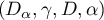
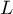
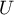
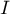

Apuntes del Curso Análisis Estático de Programas Lógicos
El siguiente es una apunte del curso Análisis Estático de Programas Lógicos Basado en Interpretación Abstracta.
- Presentación: HTML | Fuentes
- Fuentes de este apunte: Repositorio en Github
- Códigos usados: Ver directorio ./tangled/
- Descargar códigos y fuentes completo: Descargar ZIP completo (O ir al repositorio de Github).

This work is licensed under a Creative Commons Attribution-ShareAlike 4.0 International License.
Este obra está bajo una licencia de Creative Commons Reconocimiento-CompartirIgual 4.0 Internacional.
1 Aserciones
1.1 Formato
Normalmente, el formato de las aserciones en prolog sigue al siguiente estructura:
:- [estado] [aserción] [pred] [: precond] [=> postcond] [+ propcomp] [# "comentario"]
La tabla tab:aserciones_estados describe los distintos valores del campo [estado]. Éstos pueden ser escritos por el usuario o por CiaoPP como salida del chequeo. Los estados que mayormente se escriben por el usuario es trust y check.
Los tipos de aserciones que se escriben en el campo [aserción] están detallados en la tabla tab:aserciones_tipos.
Usualmente, una aserción es interpreta de la siguiente manera:
[pred]es la llamada al predicado (goal) y debe ser cierta.[: precond]si existe debe ser verdadera.- Entonces,
[=> postcond]debe complirse, en cuyo caso el preprocesador retornarátrueocheckeden el[estado]. - La propiedad de computaciónd indicada en
[+ propcomp]debe cumplirse.
Si [pred] o [: precond] no se cumple, no se chequea la postcondición ni al propiedad de computabilidad. La aserción queda en forma de warning con check como estado.
| Estado | Significado |
|---|---|
| trust | Ingresada por el usuario, |
| confiar en la veracidad de la aserción. | |
| checked | La aserción fue verificada |
| true | Salida del compilador. |
| false | Error de compilación |
| check | Aserción con warnings, chequear aserción. |
- AS: Azúcar Sintáctico
| Aserción | Significado | AS |
|---|---|---|
| pred | Equivalente a calls, success y comp juntos | sí |
| (dependiendo de los campos completados). | ||
| calls | La llamada del predicado debe satisfacer | |
| la precondición indicada. | ||
| entry | Similar a calls pero declara la llamadas | |
| exportadas. Son confiadas por el compilador. | ||
| comp | Toda llamada del predicado que cumpla con la | |
| precondición, debe cumplir con la propiedad | ||
| de la computación dada. | ||
| regtype | Declara un tipo regular. | |
| success | El predicado que cumpla con la precondición | |
| y retorne éxito debe verificar la postcondición. | ||
| doc | Documentación utilizada por Pldoc | |
| test | Testeo con instancias. Similar a success. |
Más información en info:ciao#The Ciao assertion language.
test no se verifica con CiaoPP porque no trabaja con dominios abstractos.
1.1.1 Azúcares sintácticos
pred qsort(A,B) : (list(A), var(B)) => list(B) + not_fails.
Es equivalente a lo siguiente:
:- calls qsort(A,B) : (list(A), var(B)). :- success qsort(A,B) : (list(A), var(B)) => list(B). :- comp qsort(A,B) : (list(A) , var(B)) + not_fails.
1.2 regtype
Para utilizar regtype, se debe agregar el módulo regtypes. Más información en: info:ciao#Declaring regular types.
Declara como tipos regulares un predicado. En otras palabras, declararía un dominio abstracto. Luego se puede utilizar en otras aserciones para chequear que una varible está en un dominio.
Por ejemplo, en el código del autómata se puede utilizar el tipo regtype para declarar el tipo car/1 y en el entry se declara que C es una lista con dominio en car/1 y S de tipo initial/1
:- module(aut, _, [assertions, regtypes]). :- entry accepts_(S,C) : (initial(S), list(car, C)). :- regtype car/1. car(a). car(b). %% ... accepts_(State, []) :- final(State). %% ...
1.3 comp
Varios de los predicados para comp están definidos en el módulo native_pros. Es necesario incluirlo en el preámbulo. Más información en: info:ciao#Properties which are native to analyzers
Algunos predicados para chequeo de computación interesantes son: not_fails, no_choicepoints, possibly_fails, fails, non_det, is_det, possibly_nondet, finite_solutions, terminates, exception, no_exception, possible_exceptions.
2 Checking
CiaoPP trabaja sobre dominios abstractos y no concretos. Por ello, test no funcionaría si se brindan datos concretos. En ese caso utilizar los testeos de unidad.
Los dominios abstractos se irán creando a medida que sea necesario con nombres de la forma rtNNN donde NNN es un número. A menos que se declaren con regtype/1.
Se puede utilizar el predicado output/0 en la consola CiaoPP para obtener el archivo con los resultados del análisis y el chequeo.
3 Teoría
3.1 Propiedades de la interpretación abstracta
3.2 Aproximaciones correctas
3.3 Función de concretización
Sea Dα un dominio abstracto y partes de (o "conjunto potencia de") un dominio concreto, se dice que es la función de concretización.
Ejemplo, sea el dominio abstracto , se puede definir a γ como sigue:
Es preciso dar la definición de como sigue: .
3.4 Función de abstracción
Sea D un dominio y Dα el dominio abstracto, se define a como la función de abstracción.
Ejemplo:
3.5 Significado abstracto
La función se denomina función de significado abstracto.
3.5.1 Significado abstracto segura
Se dice que es segura si:
Por ejemplo: Sea un programa con entrada  y salida .
Entonces la función que representa a este programa concreto es .
Abstrayéndolo con la función de significado abstracto se obtiene donde es la operación abstracta de los signos definida en los ejemplos anteriores.
y salida .
Entonces la función que representa a este programa concreto es .
Abstrayéndolo con la función de significado abstracto se obtiene donde es la operación abstracta de los signos definida en los ejemplos anteriores.
Si el programa tiene como entrada un número positivo ( abstrayéndolo resulta en ), entonces se obtiene: .
3.6 Semánticas colectoras
La semántica I/O que se viene tratando es muy escueta. El análisis de semánticas extendidas se basa en deducir información sobre el estado en los puntos de programa (fixedpoints). Pero diferentes puntos de programa pueden alcanzarse bajo diferentes estados y desde diferentes puntos. Por ello, se necesita calcular una colección semántica de estados abstractos para un punto de programa.
"Resumir" la semántica colectora (collecting semantics) sería más eficiente. Para ello se puede utilizar la estructura de retículo (lattice) en el dominio abstracto.
3.6.1 Estructura de Retículo
Se puede estrablecer una operación de orden ≤α sobre el dominio abstracto Dα. Si es un retículo completo, entonces para todo , existe un único mínimo límite superior .
3.7 Inserción de Galois
Sea:
- D y Dα retículos completos
- una función monótona de concretización.
- una función monótona de abstracción.
La estructura  se denomina inserción de Galois si cumple con lo siguiente:
3.7.1 Aproximación Segura
Sea una inserción de Galois . Se dice que se aproxima de forma segura a sssi .
3.7.2 Teorema fundamental
Dada una inserción de Galois y dos funciones monótonas y .
Si Fα es una aproximación de F entonces lfp(Fα) es una aproximación de lfp(F).
4 Semántica de Punto Fijo
4.1 Definiciones
- Un lenguaje de primer orden , asociado a un programa .
- Sea  el Universo de Herbrand.
- Sea la sa Base de Herbrand.
- Una Interpretación de Herbrand es un subconjunto de .
- Sea  es el conjunto de todas las interpretaciones de Herbrand.
- Un Modelo de Herbrand es una interpretación de Herbrand que contiene todas las consecuencias del programa.
- Sea el operador de consecuencia inmediata. Está definido por

- es procedimiento para obtener el mínimo punto fijo comenzando desde .
4.2 Ejemplo
Sea el siguiente programa P:
p(f(X)) :- p(X). p(a). q(a). q(b).
Escrito formalmente:
El Universo de Herbrand es:
La Base de Herbrand es:
El conjunto de todas las interpretaciones de Herbrand es:
Un modelo de Herbrand es:
El procedimiento para obtener el mínimo punto fijo es:
4.3 Interpretación abstracta "Bottom Up"
Aplicar la interpretación abstracta consiste en definir lo siguiente:
- Un dominio abstracto: Iα
- donde sus elementos son aproximaciones de elementos de
- Función de concretización: γ
- Función de abstracción: α
- Operador abstracto: TαP
- Es la versión abstracta de TP
- Inserción de Galois:
Para demostrar exactitud o terminación se debe:
- Exactitud:
- Iα es un retículo completo
- Iα Debe aproximar a
- TαP es una aproximación segura de TP
- i.e.
- Terminacion:
- TαP es monótono
- Iα cadena ascendente finita.
Con esto se puede deducir que donde:
- es el número de pasos (finito)
 aproximará a .
aproximará a .
La Figura intabs_bottom_up muestra los elementos indicados anteriormente y la relación entre ellos. Obsérvese la separación entre los dos "dominios" de interpretación e interpretación abstracta y el uso de las funciones de concretización y abstracción para poder "ir y venir" entre ellos.